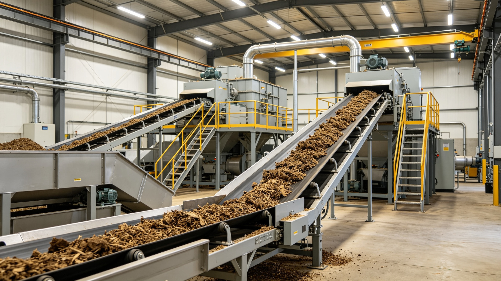
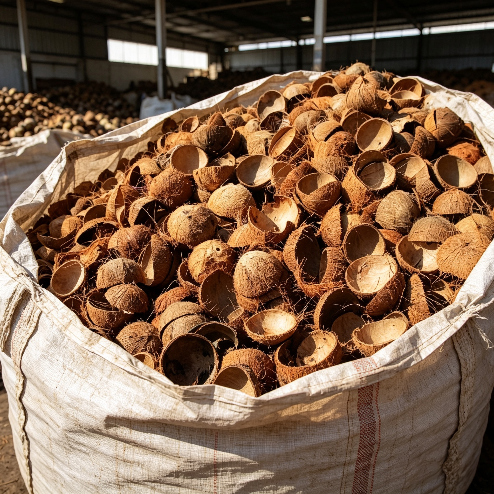
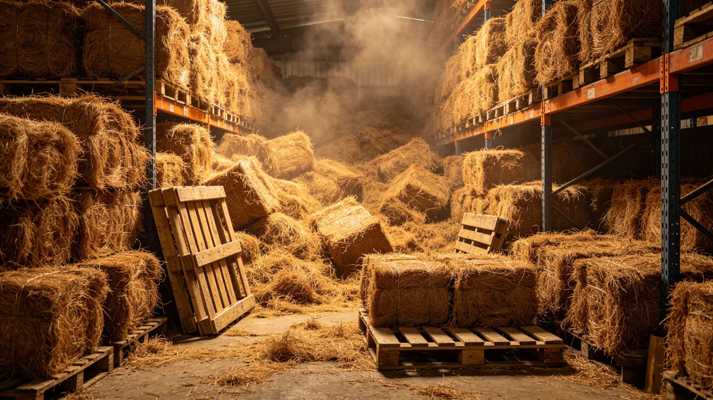
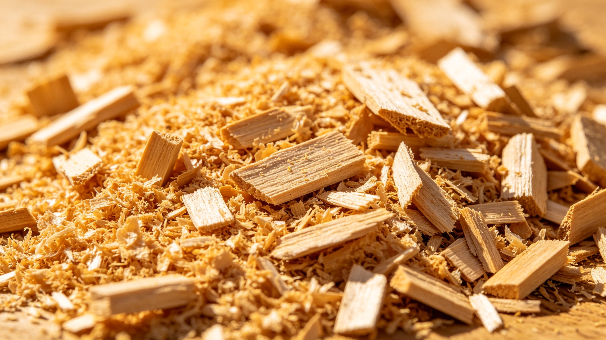

PT Waygo Sinergi Nusantara membantu industri memperoleh pasokan biomassa melalui jaringan supplier, pengumpul, dan produsen biomassa di berbagai wilayah Indonesia. Kami mengoordinasikan pengumpulan komoditas energi terbarukan untuk mensuplai fasilitas Bio-refineries dan Pembangkit Listrik.
Dunia sedang bergerak secara radikal menuju target emisi Net Zero. Permintaan dari Eropa dan Amerika Utara untuk Sustainable Aviation Fuel (SAF) dan Hydrotreated Vegetable Oil (HVO) telah meningkat. Indonesia, sebagai negara dengan lahan pertanian dan industri F&B masif, adalah reservoir besar untuk bahan mentah berbasis limbah (waste-based feedstocks) seperti minyak jelantah (UCO) dan residu pertanian.
Namun, ada satu tantangan koordinasi utama: Fasilitas energi multinasional membutuhkan suplai terstandarisasi dalam volume besar. Sementara itu, bahan mentah ini seringkali tersebar di ribuan titik lokal, dari restoran hingga kelompok pengumpul di daerah-daerah terpencil.
PT Waygo bertindak sebagai Sourcing Partner & Supply Chain Coordinator. Kami membantu memetakan dan menghubungkan berbagai titik pengumpul mikro, mengonsolidasikan material melalui fasilitas pengolahan mitra yang terstandarisasi, serta membantu memastikan volume yang dikirim memenuhi spesifikasi presisi yang diamanatkan industri global.

Minyak jelantah (UCO) diklasifikasikan sebagai Annex IX Part B feedstock dalam direktif RED II, menjadikannya salah satu komoditas energi paling dicari di dunia.
Kami membantu kebutuhan pasokan biomassa untuk boiler industri, pabrik pengolahan, fasilitas energi terbarukan, dan kebutuhan ekspor secara berkesinambungan.
Kami membuka peluang kerja sama dengan supplier biomassa, pengolah limbah pertanian, pemilik gudang, pengumpul batok kelapa, pengolah serabut kelapa, produsen wood chip, serta pelaku usaha biomassa lainnya.
Bergabunglah dalam jaringan suplai kami untuk mendapatkan akses langsung ke pemenuhan permintaan skala industri serta kepastian penyerapan komoditas jangka panjang.
Daftar Menjadi Vendor →Spesifikasi material yang diekstraksi dari jaringan pemasok Nusantara, difasilitasi dengan standar uji mutu, siap untuk memenuhi kebutuhan kontrak industri.
Komoditas utama pendukung energi aviasi dan logistik darat ramah lingkungan. UCO dikumpulkan dari jaringan HORECA dan pabrik pemrosesan makanan. Melalui koordinasi dengan fasilitas mitra pengolahan, dilakukan proses heating dan penyaringan untuk membantu memastikan tingkat impurities tetap sesuai standar sebelum dimuat ke dalam kontainer ekspor.
| Free Fatty Acid (FFA) | Max 5% (Standard) / Up to 10% (High FFA) |
| Moisture & Impurities (M&I) | Max 2% - 3% |
| Iodine Value (IV) | Min 50 g I2/100g |
| Sulphur Content | Max 50 ppm |

Dihasilkan dari sentra perkebunan kelapa nusantara. Material ini dipisahkan dari sabutnya dan dikeringkan secara optimal (sun-dried), menghasilkan sumber karbon dengan densitas tinggi. Sangat dibutuhkan sebagai bahan dasar bagi industri Karbon Aktif untuk filter air industri maupun produsen briket premium dunia.
| Condition | Raw, Sun-Dried, Half/Quarter Cuts |
| Moisture Content | Max 12% - 15% |
| Impurities (Dust/Fiber) | Max 3% |
| Packaging Setup | PP Bags 50kg / Loose Bulk in Container |

Diekstraksi dari sabut kelapa oleh jaringan pengolah mitra kami. Serat alam ini memiliki ketahanan yang luar biasa terhadap air dan gesekan. Dikompresi menggunakan mesin baling (press) menjadi bentuk blok padat untuk menunjang efisiensi kargo. Sangat penting bagi suplai industri manufaktur matras, insulasi otomotif, dan produksi geotextile.
| Color Grade | Golden Brown |
| Moisture Limit | Max 15% - 20% |
| Kadar Kotoran (Impurities) | Max 2% - 5% |
| Packaging | High-Density Bales (100-115kg) |

Kategori ini mencakup Cangkang Sawit (PKS), Wood Pellet, Wood Chips, hingga serbuk gergaji (Sawdust) yang banyak digunakan sebagai bahan bakar substitusi boiler industri dan fasilitas PLTU. Kami mengatur rantai pasok material berkalori tinggi yang mampu membantu menekan emisi sulfur dibanding penggunaan bahan bakar fosil tradisional, ideal untuk mendukung transisi Co-firing.
| Gross Calorific Value | 4,000 - 4,200 Kcal/kg |
| Moisture Limit | Max 20% |
| Komponen Utama | Selulosa dan Lignin yang memadai sebagai *binder* alami. |
| Trade Volume | Bulk Logistics Coordinate |
Dari titik pengumpulan bahan mentah hingga pemuatan ke kapal kargo. Berikut adalah representasi cara jaringan kerja PT Waygo Sinergi membantu mengelola kelancaran distribusi komoditas industri.
Armada mitra kolektor lokal menyisir sumber penghasil limbah F&B dan hasil panen harian. Sistem dokumentasi pendataan diaplikasikan untuk merekam titik asal pasokan, sebuah langkah yang menunjang kejelasan asal usul komoditas (traceability) sesuai standar sertifikasi.
Komoditas yang terkumpul didistribusikan ke depo atau gudang milik mitra jaringan kami di berbagai wilayah. Di titik ini, dilakukan penanganan fisik tahap awal seperti penyaringan kotoran kasar atau pengeringan dasar, sebelum komoditas ditransfer menggunakan truk logistik.
Tahap krusial untuk memenuhi standar klien B2B. Komoditas dikonsolidasikan melalui fasilitas pengolahan tersertifikasi milik mitra ahli kami. Pengawasan QA (Quality Assurance) diterapkan secara seksama pada proses reduksi kelembapan maupun uji parameter fisik kimia untuk menjamin kesesuaian suplai terhadap kontrak yang disepakati.
Komoditas yang telah tervalidasi siap diberangkatkan. Tim logistik dan administrasi perdagangan kami mendampingi pergerakan kargo mulai dari pengisian ke kontainer atau Flexitank hingga pengurusan dokumentasi di pelabuhan muat, membantu memastikan kelancaran transaksi bagi buyer.
Rincian parameter operasional khusus untuk komoditas Biomassa, UCO, dan tata niaga suplai internasional.
Sampaikan profil inkuiri maupun rencana penawaran kemitraan suplai Anda di sini. Tim B2B Trade Desk kami siap untuk memproses evaluasi korespondensi korporat dengan efisien.
24 - 48 Jam (Corporate Working Days).
Koordinasi inspeksi fisik akan dilakukan setelah kesepakatan korespondensi awal terbangun.
Sourcing Responsibility: Operasional koordinasi PT Waygo Sinergi Nusantara mendukung pemenuhan praktik pengadaan berkelanjutan yang bertanggung jawab. Kegiatan konsolidasi suplai limbah F&B maupun material biomass sejalan dengan dorongan pelestarian ekosistem dan mendukung kelengkapan dokumentasi bagi pasar global.
Legal Terms: Seluruh rincian volume dan parameter material yang tertulis di platform ini bersifat indikatif. Kesepakatan kapasitas pasokan (Supply Commitments) dan jaminan kualitas secara absolut hanya mengikat apabila telah diformulasikan ke dalam dokumen kontrak B2B resmi serta didukung verifikasi Surveyor Independen. Kami menjaga kerahasiaan informasi komunikasi bisnis sesuai standar tata kelola komersial.